附加品
共 981 个附加品 · 第 5/7 页
| 名称 | 稀有度 | 效果 | 所属 |
|---|---|---|---|
| 传说 | “有人坚持认为‘苹果派计划’随着时间不断演变，转向新的媒介形式以取得成果。” 传送到幻觉后，冷门游戏卡带触发其效果，持续 20 秒：破坏、伤害与翻越的动作速度增加 30%。 | 未知者 | |
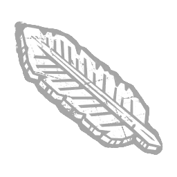 黑曜石羽毛 Obsidian Feather |
活动 | “一些村民会在岩石上雕刻羽毛，希望他们的信仰能够保护自己。”——《格哈特异象》第 3 章 你无法再取消或手动施放被控制的神圣之光，并且当它将要超时时会自动施放。控制神圣之光时的移动速度提高 +100 %。可控制神圣之光的最大时间减少 -25 %。施放神圣之光后的恢复时间增加 +10 %。施放神圣之光后的恢复期间移动速度降低 -30 %。 | 审判 |
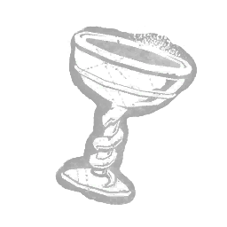 黑曜石高脚杯 Obsidian Goblet |
活动 | 一只由纯黑曜石雕刻而成的古老酒杯。修改“处刑之罚”并赋予以下效果：可破坏可破坏墙壁/木板，冷却时间增加+20%。“原谅我唤醒了你。但没有你，我实在撑不下去了。”——詹姆斯·桑德兰 | 刽子手 |
| 怪灯泡 Odd Bulb | 活动 | 一种来历不明、沉重且完全不透光的灯泡，即使在关闭时也会发出微弱的光。光束亮度提升 +50%。成功致盲持续时间增加 +25%。电池消耗率提升 +14%。 | |
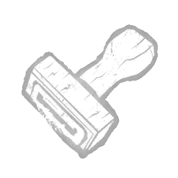 怪印章 Odd Stamp |
精贵 | 图标 描述 价格 此附加品已退役（此可解锁物品在过去已退役，在当前游戏中已不存在。） 一枚用坚实浅色木料雕刻而成的印章。上面发现的文字 | |
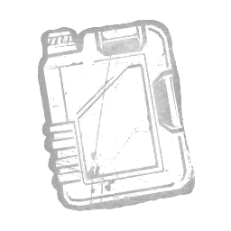 杂牌机油 Off-Brand Motor Oil |
罕见 | 一种廉价油，可用于润滑嘈杂的链条。超频表的充能速率增加15%。 | 电锯莽夫 |
| 办公室电话 Office Phone | 罕见 | 他试着留下讯息以示警告，但他也没能撑多久。当处于被嵌有消防斧的逃生者 24 米范围内时，对其他逃生者施加以下主要效果：从另一名逃生者身上拆除消防斧所需的时间减少 -50%。显示灵气（消防斧）。施加遗忘状态效果。此外，若他们处于受伤状态，则施加破损状态效果。 | 机械人偶 |
| 油画颜料 Oil Paints | 稀有 | 只剩下几团黑与灰，Carmina 却能用它们绘出辽阔的风景。使杀手直觉的侦测半径增加 +1.5 米。 | 艺术家 |
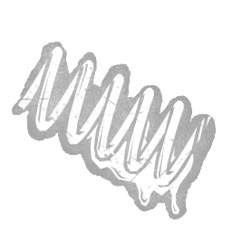 油性弹簧圈 Oily Coil |
传说 | 一种透明的油，使捕兽夹的弹簧更难处理。重新布置捕兽夹后会显示5秒的灵光。 | 设陷者 |
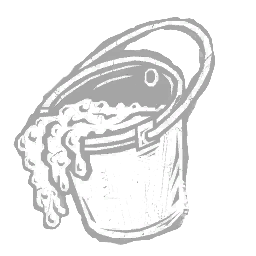 油性汁液 Oily Sap |
精贵 | 弥漫而起的雾气萦绕在空气中，感官被压制的时长进一步延长。修改雾瓶，获得以下效果：雾云持续时间增加 +2 秒。 | |
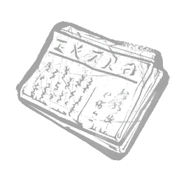 旧报纸 Old Newspaper |
稀有 | 它讲述了一位预测到火山爆发的当地妇女，这让人们最初得以找到贞子。使你在“显现”后完全隐身状态的持续时间增加33%。 | 般若 |
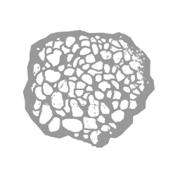 乳香 Olibanum Incense |
稀有 | 从乳香树中提取的珍贵树脂，因其甜美的柑橘香味而在仪式中使用。奉献之池的气场向你显示4秒。 | 瘟疫 |
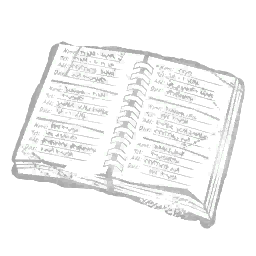 奥尔森的地址簿 Olsen's Address Book |
罕见 | 以潦草的蓝色笔迹填写。上面列出了罗斯维尔所有凶杀案受害者，以及他们的电话号码和住址。被标记的逃生者进行匆忙行动时的气场会暴露给你，持续 5 秒。 | 鬼脸 |
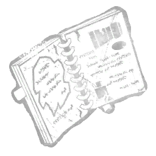 奥尔森的日记 Olsen's Journal |
罕见 | 一本写满污渍手写笔记的螺旋笔记本。日记详细记录了用于跟踪受害者的各种装备。回顾你过去的手法会触发令人兴奋的回忆。被标记的逃生者会陷入浑然不觉状态效果。 | 鬼脸 |
| 奥尔森的钱包 Olsen's Wallet | 精贵 | 奥尔森的钱包里装着三十美元现金、一张录像俱乐部会员卡，以及一张奥尔森第一位罗斯维尔受害者的折叠照片。携带这些定罪证据能提升你的兴奋与决心。破坏可破坏墙壁或木板后，立即补充夜幕。 | 鬼脸 |
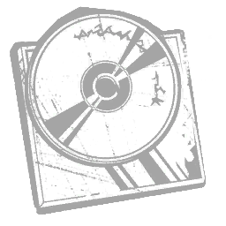 正中目标单曲 On Target Single |
精贵 | 智云成名前制作的地下单曲。只有最忠实的NO SPIN粉丝收藏了这颗隐藏的宝石。处于S级时，每次飞刀命中会使压轴好戏的持续时间增加0.5秒，最多增加20秒。 | 小丑女 |
| 宗教裁判所 Order of Inquisition | 精贵 | “所有信奉其荣耀者均被委派搜寻异端。连你的邻居也不可信。”——《科恩拉德见证录》第十六章：施放圣光时，其半径初始缩小 -25%，但在 1 秒内扩大 +50%。 | 审判 |
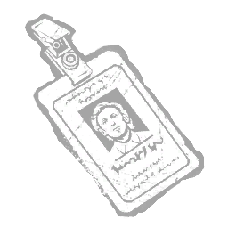 勤务员证 Orderly ID |
稀有 | 印有亨利·克里尔在被另一个维度改变之前的面容。修改藤蔓攻击，获得以下效果：未处于灭世者模式时，瞄准范围增加 2 米。 | 先驱者 |
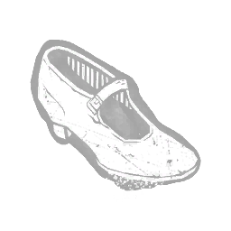 勤务员的鞋 Orderly's Shoe |
稀有 | "它挂在她抽搐的脚上，而刀刃刺入她的腹部。" 惊吓后急速状态效果的持续时间增加5秒。 | 杀戮者 |
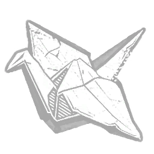 折纸鹤 Origami Crane |
稀有 | 千纸鹤之中的一只，只为让你的心愿得以成真。山冈的附身充能速度提升+20%。 | 怨灵 |
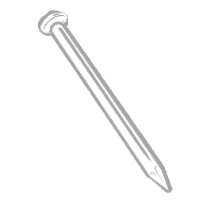 原始痛苦 Original Pain |
传说 | “第一根被钉入针头人颅骨的钉子。如此快感与痛苦。”从附身锁链中挣脱的逃生者会获得以下效果：其气场暴露8秒。“别哭，浪费了好受的痛苦。”——针头人 | 地牢修女 |
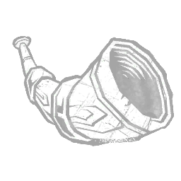 华丽号角 Ornate Horn |
精贵 | 曾用于集结军队奔赴战场，其存在本身便能带来雄师劲旅。修改诅咒飞行术，追加以下效果：该法术召唤的飞行实体数量增加1个。 | 巫妖 |
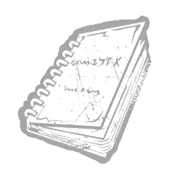 奥特玛丽文字 Ottomarian Writing |
精贵 | 奥托·斯坦珀的话，是信徒们唯一能读到的文字，他 therein痛斥恶念与谬言。使黄昏（The Gloaming）在白天时的冷却时间减少 -2 秒。 | 深潜者 |
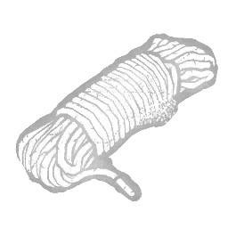 户外绳索 Outdoor Rope |
罕见 | 结实的户外绳索，适合捆绑任何物品。放置梦境陷阱时的移动速度增加 +15%。 | 梦魇 |
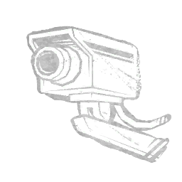 户外监控 Outdoor Security Camera |
活动 | 一台小型监控摄像头，拍下了鬼面闯入北罗斯维尔贝尔维尤路一处住宅的画面。摄像头的角度恰到好处，既能瞥见鬼面的身影，又不会给警方留下任何真正的线索。将一名被标记的逃生者放入濒死状态后的7秒内可看到其气场。“一图胜千言。”——鬼面 | 鬼脸 |
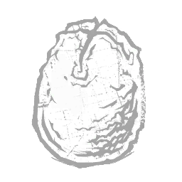 卵形体 Ovomorph |
稀有 | 它看起来无害，但其中蕴含的恐怖难以估量。在隧道外时，爬行模式的充能速度提高 +25%。 | 异形 |
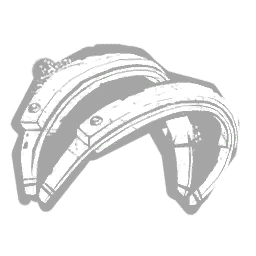 衬垫钳口 Padded Jaws |
稀有 | “这些带衬垫的钳口是用来束缚，而不是用来伤害的。”以以下效果强化捕兽夹：不再对被夹住的逃生者造成伤害。带衬垫的钳口为夹住逃生者得分事件提供+100%的额外血迹分。带衬垫的钳口可以抵消锯齿钳口与锈蚀钳口附加品的效果。 | 设陷者 |
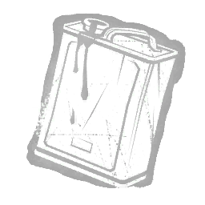 油漆稀释剂 Paint Thinner |
精贵 | 一罐高度挥发且易燃的材料。导致放下梦境木板的逃生者触发杀手本能，持续 6 秒。使梦境投射能力能够以这些逃生者为目标：该次梦境投射的充能速度增加 +100%。 | 梦魇 |
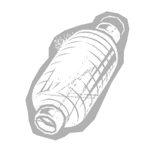 纸灯笼 Paper Lantern |
稀有 | 或许是在愤怒彻底吞噬他之前，较为单纯岁月的一件纪念物。吸收模式下，朝你飞来的血球漂浮速度提升 +4 米/秒。 | 鬼武者 |
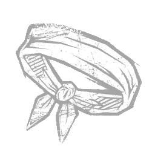 帕克的头带 Parker's Headband |
精贵 | 大胆的时尚选择，兼作将汗水从眼部吸走的便利工具。离开隧道后获得 +5% 急速状态效果，持续 3 秒。 | 异形 |
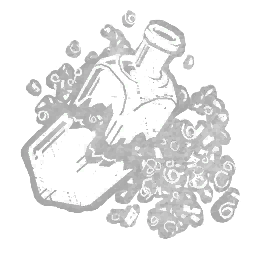 派对酒瓶 Party Bottle |
稀有 | 成为派对上的活跃气氛担当！改装药剂和解毒剂后获得以下效果：瓶子在破碎时除了原有效果外，还会释放彩带。用瓶子直接命中可获得 100 点额外血迹点，计入诡计计分类别。 | 小丑 |
| 派对帽 Party Hat | 罕见 | “派对永不结束，无论他们如何哀求。” 当火焰斧嵌入环境中时，适用以下效果：使效果范围的最大尺寸增加+250%。使效果范围的扩展时间增加+2.5秒。使效果范围的持续时间减少-20%。 | 机械人偶 |
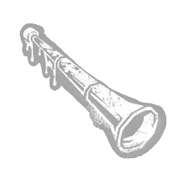 派对噪声器 Party Noisemaker |
罕见 | “一件刺穿女人眼球、挖出她大脑的派对乐器。”打破木板/可破坏墙壁/触发惊吓后，将揭示距离超过28米的所有逃生者，持续6秒。 | 杀戮者 |
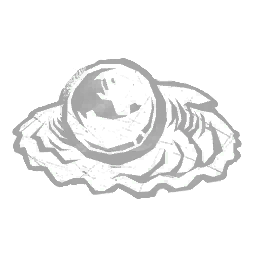 力量珍珠 Pearl of Power |
精贵 | 其闪烁的表面为持握它的法师注入能量，使其能够施放更多法术。使用基础攻击命中逃生者时，触发以下效果：所有当前冷却中的法术剩余充能时间减少2秒。 | 巫妖 |
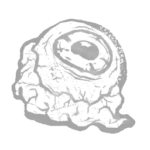 猪眼 Pig's Eye |
罕见 | 它仍闪烁着唾液的光泽。修改“发光真菌”技能，当逃生者距离你当前位置至少40米时食用它，其气场会暴露6秒。 | 浮屠鬼 |
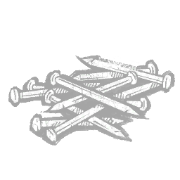 一堆钉子 Pile of Nails |
传说 | 当你的目标正担心一堆钉子飞向脑袋时，隐藏起来就容易多了。手动结束躲猫猫模式后，获得3秒的无法侦测状态效果。 | 好人 |
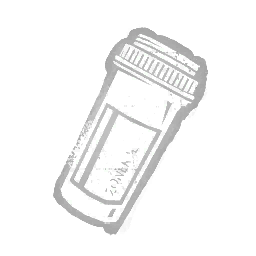 药瓶 Pill Bottle |
传说 | 一个空的药瓶，曾装有名为佐内拉尔的药物。对通过入睡进入梦境世界的逃生者，下一次微睡的持续时间减少可叠加的 -10%，最高可叠加至 -50%。 | 梦魇 |
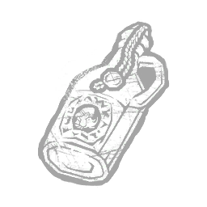 劫掠蜜酒 Pillaged Mead |
稀有 | 从受害者身上取得的饮品尝起来甘甜，但这样的享乐往往短暂。守卫的破坏或伤害动作持续时间减少10%。 | 骑士 |
| 披萨护目镜 Pizza Goggles | 精贵 | 在小十一进入感官剥夺状态时使用，可排除外界干扰，使心智集中。修改逆世界，获得以下效果：冷却时间减少 25 秒。修改地下之门攻击，获得以下效果：攻击半径减少 90%。攻击冷却时间减少 80%。 | 先驱者 |
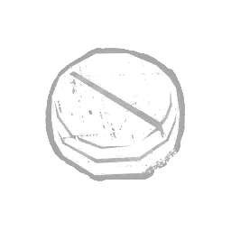 安慰剂片 Placebo Tablet |
稀有 | 一颗完全无效的药丸……真的吗？冲刺期间的移动速度降低 -15%。冲刺得分事件获得 +100% 额外血点。 | 枯萎者 |
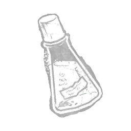 瘟疫胆汁 Plague Bile |
罕见 | 从瘟疫身上提取的胆汁样本，经蒸馏并用化学混合物处理。冲刺期间的转向速度提高 +10%。 | 枯萎者 |
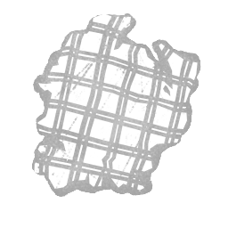 格纹法兰绒 Plaid Flannel |
稀有 | 一块撕裂的红黑格子法兰绒。这块布料赋予护士惊人的专注力。解锁看到闪烁落点的能力。 | 女护士 |
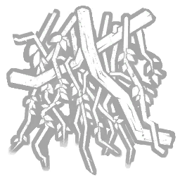 43植物藤蔓 Plant 43 Vines |
精贵 | 被T病毒感染的植物缠绕的残余物，它杀死了一名开发它的研究员。增加补给箱的开启时间+4秒。 | 复仇女神 |
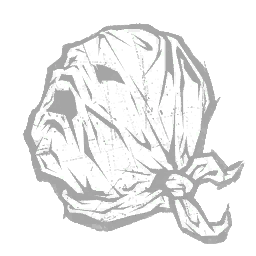 塑料袋 Plastic Bag |
传说 | 没有什么比缺氧更让猎物疲惫的了。走过幻影足迹的逃生者将受到15秒的疲惫状态效果。 | 好人 |
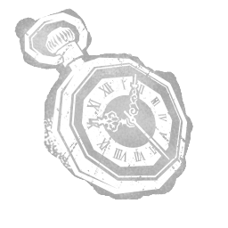 怀表（斯宾塞的最后一口气） Pocket Watch (Spencer's Last Breath) |
罕见 | 一块烧焦且破碎的怀表，内有嘎嘎作响的碎片。取自护士莫里斯的尸体。连续闪烁窗口的持续时间增加+0.2秒。 | 女护士 |
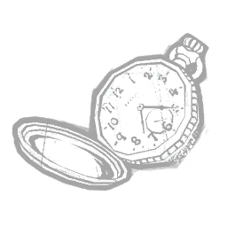 怀表（吸血鬼时刻） Pocket Watch (Vampiric Shift) |
精贵 | 一件能扭曲时间法则的工具。修改传送能力，效果如下：破坏木板后立即重新充能。 | 黑暗领主 |
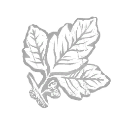 毒栎叶 Poison Oak Leaves |
罕见 | 一株看似普通的植物，凯勒布发现用其油脂涂覆的矛刺会让伤口周围起难以忍受的水泡。使逃生者的治疗时间增加1.5秒。 | 死神之枪 |
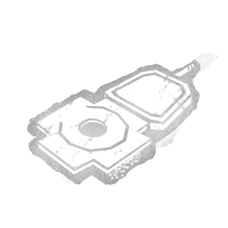 抛光电极 Polished Electrode |
罕见 | 一套近乎全新的标准电极设备，用于进行电痉挛治疗。使“电击疗法”攻击的影响范围扩大3米。 | 医生 |
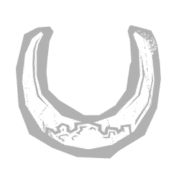 抛光前立 Polished Maedate |
罕见 | 被比作恶魔后，Kazan 从自己的头盔上扯下的角状饰物。使血之狂怒的被动充能速率提高 +0.1 c/s。 | 鬼武者 |
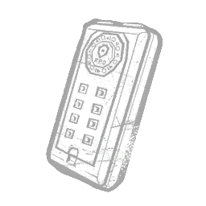 便携保险箱 Portable Safe |
精贵 | 一个需要复杂组合才能打开的小容器。使用剧毒冲撞造成伤害时，逃生者会受出血状态影响，直至完全治疗。 | 幕后黑手 |
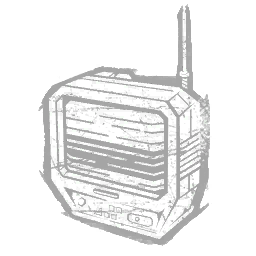 便携电视 Portable TV |
精贵 | 小到可以放进任何房间，只是别让它泡澡。逃生门开启后，将劈砍与切割的持续时间延长至默认持续时间的170%。 | 好人 |
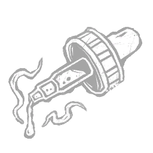 强效萃取液 Potent Extract |
活动 | 一滴就足以改变这奇异药剂的浓度。修改雾瓶，获得以下效果：雾云不透明度增加 +100%。雾云持续时间减少 -50%。雾云范围缩小 -25%。 | |
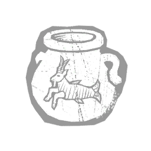 强效酊剂 Potent Tincture |
罕见 | 一种起泡的浑浊液体，散发着浓烈的草药和酒精气味。直接涂抹在水泡上。使污秽喷 | 瘟疫 |
| 速度药剂 Potion of Speed | 罕见 | 一种奇特的合剂，将物理法则降格为区区建议。施放飞行术时，获得以下效果：施放后的交互冷却时间减少0.15秒。 | 巫妖 |
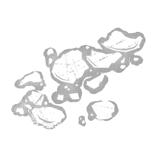 蛋壳粉末 Powdered Eggshell |
稀有 | 闪烁着淡金色光泽的微小蛋壳碎片。将幻影陷阱的触发持续时间增加 +20%。 | 女巫 |
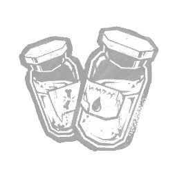 玻璃粉 Powdered Glass |
精贵 | 这种玻璃粉末曾用于战斗风筝的弦线，如今在她的刀刃上有了更加邪恶的用途。被爪夹陷阱夹住的逃生者受到普通攻击命中时，会承受出血和重伤状态效果，持续70秒。 | 骷髅商人 |
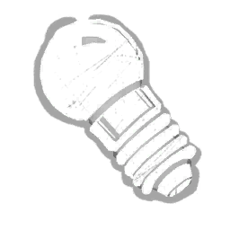 强力灯泡 Power Bulb |
稀有 | 一种微型手电筒灯泡，功率更大，光束更亮更强。光束亮度提升 +20%。成功致盲持续时间增加 +10%。“即使是最强大的光也无法穿透黑雾的黑暗。” | |
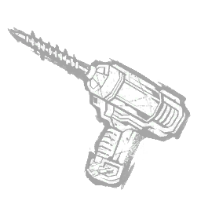 电钻 Power Drill |
罕见 | 附带一打方便的钻头，用在人身上都会弄得一团糟。成功发动劈砍与切割攻击后，躲猫猫模式的冷却时间缩短-10%。 | 好人 |
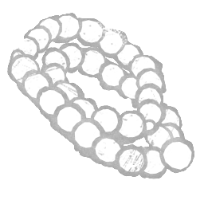 祈祷念珠 Prayer Beads |
罕见 | 图标 描述 代价 此附加品已退役（此解锁物在过去已退役，在当前游戏中不再存在。）“一串大小不一的哑光珠子，用于祈祷。” | |
| 念珠手链 Prayer Beads Bracelet | 传说 | 能够诵读神圣真言的强力手环。使用山冈的附身时，中等程度地缩小声音发射半径的范围。 | 怨灵 |
| 祈祷跪凳 Prayer Kneeler | 稀有 | “承受祈祷之苦吧，因为不信者的苦难远甚于此。”——（论异端之二，第8章）控制被阻挡的“神圣之光”时：其最大速度降低-99%。 | 审判 |
| 祈祷碑残片 Prayer Tablet Fragment | 稀有 | 一块残破的石板，上面刻着被腐化的咒文，原本用于驱除疾病与身体不适。受到邪恶净化击中的道具，其感染持续时间增加+40秒。逃生者在进行互动时获得的感染增加+100%。在诡计状态下的计分事件中获得+100%额外血点。邪恶净化不再直接影响逃生者。 | 瘟疫 |
| 起动灯泡 Primer Bulb | 罕见 | 向点火系统泵入更多燃气，以确保快速而强力的启动。使力量充能时间减少 -1 秒。 | 食人魔王 |
| 囚链 Prison Chain | 传说 | 一条粗重的铁链，曾拴着一颗钢球，锁在凯勒布的脚踝上。如今被改作钩挂长矛之用。使逃生者挣脱“救赎者”所需的时间增加10%。“监狱大院外劳作的囚犯必须佩戴不低于18磅的钢球。”——赫尔郡监狱看守手册 | 死神之枪 |
| 预防护符 Prophylactic Amulet | 罕见 | 一块残破的石板，上面刻着被腐化的咒文，原本用于驱除疾病与身体不适。可投入的奉献之池数量减少-2个。 | 瘟疫 |
| 防护手套 Protective Gloves | 罕见 | 厚实的手套，会降低手工灵活度，但能保护双手免受伤害。在破坏钩爪工具箱时，你获得以下效果：抑制破坏行动完成后通常触发的巨响提示音。 | |
| 原型爪 Prototype Claws | 罕见 | 一件用来修剪灌木的自制工具。使梦境陷阱的充能时间缩短 -10%。 | 梦魇 |
| 原型转子 Prototype Rotor | 传说 | 尖端设计让无人机能以刀锋般精准的方式进行移动。无人机扫描线的转速提高+10%。 | 骷髅商人 |
| 刺破的眼球 Punctured Eyeball | 稀有 | “车站曾是一片疯狂的景象。警官们似乎自相残杀。”处于受伤状态且同时处于虚弱状态的逃生者成功执行驱散动作时，会受到以下效果影响：施加深度伤口状态效果。 | 未知者 |
| 刺鼻药瓶 Pungent Phial | 精贵 | 图标 描述 费用 此附加品已退役（此可解锁物在过去已退役，在当前游戏中已不存在。）清澈的液体有一种非常独特的气味，可以…… | 女猎手 |
| 紫人涂鸦 Purple Guy Drawing | 精贵 | “他只需10秒就能画好！” 当逃生者身上嵌有火焰斧时，无论他们执行何种急速动作，紫衣人绘画都会触发其主要效果：他们的气场暴露3秒。自行移除火焰斧后，紫衣人绘画触发其次要效果：他们的气场向你暴露6秒。 | 机械人偶 |
| 柳絮 Pussy Willow Catkins | 罕见 | 一把小巧洁净的花簇，表面覆盖着细密的灰色绒毛。幻影陷阱的气场将向你显现 3 秒。 | 女巫 |
| 脓疱粉 Pustula Dust | 罕见 | 干燥的脓疱花瓣研磨成的细粉。连环冲刺窗口的持续时间延长 +0.75 秒。 | 枯萎者 |
| 女王权杖 Queen's Sceptre | 传说 | 一位渴求鲜血的复仇女王所使用的舞台道具。使用“肠鞭”攻击成功击中逃生者会触发以下效果：从其位置喷溅出一个水蛭腺体。 | 浮屠鬼 |
| 警局肩挂对讲机 R.P.D. Shoulder Walkie | 稀有 | 由于无法沟通，浣熊市的警察们孤立无援，毫无胜算。第一次冲撞的持续时间减少20%。第二次冲撞的持续时间增加20%。 | 幕后黑手 |
| 兔子残骸 Rabbit Remains | 传说 | "在屠杀家人之前，亨利从小处着手，杀死兔子并将尸体散落在城镇各处。" 修改遁地攻击，效果：身处或进入效果区域的逃生者获得疲惫状态效果，并在离开后持续10秒。修改颠倒世界，效果：冷却时间增加5秒。 | 先驱者 |
| 幸运兔脚 Rabbit's Foot | 稀有 | “这个倒霉生物的残骸在一棵树旁被发现，肠子卡在牙齿之间。”为 UVX 蓄力时，你获得以下主要效果：血迹呈亮红色。受到 UVX 伤害的逃生者会受到以下次要效果影响：施加出血状态效果，持续 45 秒。 | 未知者 |
| 破旧引擎 Ragged Engine | 精贵 | 有人会说它需要调试。马克斯会说它已经调试好了。在不使用电锯时，超载计量表的消散速度降低 -30%。 | 电锯莽夫 |
| 随机频闪灯 Randomised Strobes | 传说 | 灯光在地面上随机闪烁，使在不平地形上立足变得更加困难。被爪钩陷阱困住的逃生者在被无人机侦测到时，受阻状态的持续时间延长+1秒。 | 骷髅商人 |
| 鼠肝 Rat Liver | 稀有 | 一堆湿漉漉、咸而软烂的肝脏。携带深渊时，你的移动速度 +3.5%。 | 俄摩拉虫 |
| 鼠药 Rat Poison | 精贵 | 辣味杀手辣椒里的秘密配方。在进行砍剁攻击时，获得以下效果：你所在位置周围6米范围内的一切事物对你显示2.5秒。 | 好人 |
| 鼠尾 Rat Tail | 稀有 | 供魔怔咀嚼的有嚼劲的鼠尾。传送门的开启速度 +50%。 | 俄摩拉虫 |
| 渡鸦羽毛 Raven's Feather | 稀有 | 飞行术最常用的材料成分。修改飞行术，追加以下效果：飞行持续时间延长+0.5秒。 | 巫妖 |
| 剃刀铁丝 Razor Wires | 罕见 | 反向捕兽夹的改装：加装的锋利铁丝使搜寻它们变得格外困难，并可能带来痛苦。健康状态下的逃生者在拼图盒的技能检验中失败会陷入受伤状态。技能检验难度提高+20%。 | 猪女 |
| 活性化合物 Reactive Compound | 罕见 | 瓶内压力逐渐累积，其中的内容物急于被释放。修改雾瓶，获得以下效果：雾云扩散时间减少 -1 秒。 | |
| 红草药 Red Herb | 精贵 | 用作强化组合效果的试剂。急救喷雾的治疗时间增加2秒。 | 幕后黑手 |
| 红苔 Red Moss | 活动 | 生长在颠倒世界树皮上的致幻苔藓。在穿越颠倒世界后，施加以下效果：从传送门现身后获得的「无法被发现」状态效果延长 +8 秒，持续至 13 秒。消除所有与从传送门现身相关的噪音。从传送门现身所需的时间 +15%。「食用其叶片可增强运动表现并产生欣快之感。」——霍金斯国家实验室 | 俄摩拉虫 |
| 红油漆刷 Red Paint Brush | 活动 | 一支沾着深红颜料的大号画笔。距离你32米以外的梦境世界气场都会向你显现。使微睡眠的默认持续时间增加 +50%。 | 梦魇 |
| 彼岸花 Red Spider Lily | 精贵 | 白色的花朵如血般染红。在狂暴状态下被普通攻击命中的逃生者会受到以下效果：使其陷入出血状态效果，持续60秒。 | 食尸鬼 |
| 红头蜈蚣 Red-Headed Centipede | 传说 | 那东西给他带来了难以估量的折磨。在狂暴状态下执行翻越动作会触发以下效果：封锁该窗户10秒。 | 食尸鬼 |
| 红发女的小指 Redhead's Pinkie Finger | 活动 | 珍贵的红发尾指。微带香气。尝起来有百花香和清漆的味道。修改兴奋剂的效果：被其瓶子直接命中的逃生者在醉酒期间受到危险状态影响。红发尾指将携带的瓶子数量限制为1。 | 小丑 |
| 精炼血清 Refined Serum | 常见 | 此附加品不再可用。库存仍可在对局中使用。“腐坏血清的精制版本，对人类食用基本安全。基本。”使用医疗箱治疗自己或其他逃生者时，按下次要操作按钮触发以下效果，持续16秒：所有移动速度提升5%。受影响逃生者身后留下枯萎者轨迹。触发效果后，精炼血清消耗医疗箱。精炼血清仅在万圣节活动期间可用。 | |
| 反光碎片 Reflective Fragment | 传说 | 一片极小的高反光材料碎片，很可能来自破碎的镜子。修改屠杀之击，效果如下：被屠杀之击命中的逃生者仅损失一个健康状态。屠杀之击的成功命中立即为邪恶化身增加 +20 秒持续时间。 | 变形者 |
| 玲子的手表 Reiko's Watch | 罕见 | 丽子留给儿子洋一的手表。不断分散注意力，时刻提醒着死亡的来临。使你在“隐匿”状态下完全隐身的持续时间增加25%。 | 般若 |
| 遥控器 Remote Control | 活动 | 小屋中VCR的遥控器。让贞子能够集中关注远处的敌人。使用“投射”后的7秒内，显示12米范围内通电电视机的气场。“她仅凭意念就能杀死一个人，这与她母亲的力量不在同一等级。”——高山龙二 | 般若 |
| 莲二郎的血手套 Renjiro's Bloody Glove | 活动 | Renjiro 在被其子 Kazan 击伤后紧贴心口的护手。每当逃生者与血球发生接触时，触发以下效果：血球被逃生者吸收。每吸收一个血球，其气场显现 2 秒。Renjiro 的血腥护手使逃生者能够以与你相同的距离看到血球。「当一切尽数流逝，唯紧守你的荣誉。」—— Renjiro 箴言 14:12 | 鬼武者 |
| 餐厅菜单 Restaurant Menu | 稀有 | “覆膜正在起皱剥落。多么开胃。” 当火焰斧嵌入环境中时，在取回火焰斧时，你获得以下效果：使最短取回时间减少-10%。 | 机械人偶 |
| 阻燃凝胶 Retardant Jelly | 罕见 | 图标描述 价格 该附加品已退役（该可解锁物品在过去已被移除，在当前游戏中不再存在。）"一种黏滑的半透明物质，带有一抹恐怖的薰衣草色..." | |
| 摇摇晃晃的链条 Rickety Chain | 稀有 | 凯勒布的原型矛枪上最先使用的脆弱钢链。尽管链条不尽如人意，但它承载着情感价值。为“刺中”得分事件提供+50%额外血点。使逃生者挣脱“救赎者”的速度增加33%。 | 死神之枪 |
| 破旧风车 Rickety Pinwheel | 精贵 | 在伊豆大岛的洞穴中发现的风车。即使无风也会旋转，令看见或听见它的人迷失方向。逃生者处于通电电视机8米范围内时，会受“浑然不觉”状态效果影响。该效果在关闭电视机后仍会持续7秒。 | 般若 |
| 凛的坏手表 Rin's Broken Watch | 罕见 | 一块玻璃破碎的手表。表带上潦草地写着“凛”的名字。使山冈的作祟的充能速度提高30%。 | 怨灵 |
| 戒指素描 Ring Drawing | 精贵 | 年轻的与一画下的井中景象。帮助被录像带诅咒之人只会招致不幸。钩住携带VHS录像带的逃生者：+1层谴责。 | 般若 |
| 法术储存戒指 Ring of Spell Storing | 罕见 | “一枚奖励充分准备者的魔法戒指。”你获得以下效果：所有法术的默认充能时间减少 -1 秒。 | 巫妖 |
| 念动力戒指 Ring of Telekinesis | 罕见 | 其奥术能量在使用者隔空操控物体时会噼啪作响。施放“法师之手”法术阻挡竖立木板时，你的翻越速度提高 +10%，持续10秒。 | 巫妖 |
| 蕾普利的手表 Ripley's Watch | 稀有 | 在像诺斯特罗莫号这样庞大的飞船上，同步手表对于记录轮班时间至关重要。使遥控火焰炮台进入爬行模式。 | 异形 |
| 撕裂的帷幕 Ripped Curtain | 罕见 | “取自海盗湾，被栖息在那里的机械玩偶捕获。” 被火焰斧击中的逃生者遭受以下效果：施加出血与重伤状态效果，持续60秒。 | 机械人偶 |
| 开膛支架 Ripper Brace | 精贵 | 智云拍摄音乐录影带《Ripper》时佩戴的护腕。虽然并非本意，但该设计比许多医用护腕更能稳定手腕。每拥有一点风格等级，基础翻越窗户、木板、可破坏墙壁、发电机的速度+6%。 | 小丑女 |
| 亚门的眼镜 Rize's Glasses | 精贵 | 他们把她塑造得足够无辜，而这正是她想要的。进入暴怒模式时，你获得以下效果：发电机的气场显示8秒。 | 食尸鬼 |
| 众目长袍 Robe of Eyes | 传说 | 佩戴后，无人能逃脱佩戴者坚定的凝视。每当你施放任意法术，所有距离宝箱6米范围内的逃生者，其气场暴露4秒。 | 巫妖 |
| 知更鸟羽毛 Robin Feather | 稀有 | 温暖的橙色羽毛，触感柔软。你获得以下效果：投掷瓶子后的冷却时间减少40%。 | 小丑 |
| 绳制颈饰 Rope Necklet | 稀有 | 由死去的植物制成的硬质颈饰。幻影陷阱的放置速度提高 10%。 | 女巫 |
| 蔷薇根 Rose Root | 精贵 | 干燥花瓣，泡茶饮用后可缓解疲劳和过度劳累的症状。使斧头的投射物速度提高 +20%。 | 女猎手 |
| 玫瑰药酒 Rose Tonic | 精贵 | 用极其罕见的新月花束中的干玫瑰制成的混合物。连环冲刺窗口的持续时间延长 +1 秒。 | 枯萎者 |
| 腐烂的绿牛肚 Rotten Green Tripe | 罕见 | 为魔怔提供动力的腐烂牛肚。你的传送速度 +15%。 | 俄摩拉虫 |
| 腐臭披萨 Rotten Pizza | 稀有 | “食物中毒可不是闹着玩的。” 你获得以下效果：使火焰斧触发的杀手本能持续时间增加+100%。 | 机械人偶 |
| 烂南瓜 Rotten Pumpkin | 稀有 | 被霍金斯的腐土污染的南瓜果肉。使你开始传送时所在的传送门自动封闭。跨维度旅行计分事件中额外获得 +200 血迹点。 | 俄摩拉虫 |
| 腐烂猪 Rotten Swine | 传说 | 一顿令人作呕的餐食，她醒来时仍感到厌恶。修改“吐息”技能，附加以下效果：击中可破坏墙壁、发电机、木板、水蛭腺体会使其变为被标记。此效果每次只能影响单个物体。与标记道具互动时，你获得以下效果：破坏和损坏的行动速度提升+15%。 | 浮屠鬼 |
| 腐烂绳索 Rotting Rope | 稀有 | 若那绳索更结实些，或许就能困住 Kazan。但事实是，他逃脱了，并屠杀了俘获他的人。增加环境中血球的气场读取范围 +2 米。「尽管死神专注，但亦有眨眼之时。」—— Renjiro 箴言 14:5 | 鬼武者 |
| 橡胶手套 Rubber Gloves | 稀有 | 一次性医用手套，避免交叉感染。治疗技能检验的完美成功区域扩大10%。 | |
| 橡胶握把 Rubber Grip | 罕见 | 一种专为手电筒设计的橡胶握把，抓握更牢固。瞄准精度提升 +40%。 | |
| 按摩油 Rubbing Oil | 精贵 | 一瓶具有祛痰功效的擦油。散发着月桂与迷迭香的常青香气。邪恶净化与腐化净化的蓄力速度增加+50%。 | 瘟疫 |
| 红宝石冠 Ruby Circlet | 稀有 | 一件被附魔的头饰，连最猛烈的火焰也能驯服。修改地狱火攻击，效果如下：缩短其冷却时间 -5%。 | 黑暗领主 |
| 规则手册2号 Rules Set No.2 | 精贵 | 并非所有游戏都必须遵循相同的规则。在逃生者的反向捕兽夹被激活之前，他们无法看到拼图盒的气场。"听着，凡事都有规则。"——拼图 | 猪女 |
| 跑鞋 Running Shoes | 精贵 | 最新高性能杀手玩偶运动科技。施展奔跑后，获得+2%急速状态效果，持续5秒。 | 好人 |
| 锈色蛋 Rust-Coloured Egg | 传说 | 一枚泛旧的蛋，呈红橙色，约鹌鹑蛋大小。成功的“处刑之罚”攻击触发以下效果：为“审判之仪”充能+30%。“詹姆斯……你让我感到幸福。”——玛丽 | 刽子手 |
| 生锈链条 Rusted Chains | 传说 | 这条链条上覆满了干硬且易脱落的锈斑，使伤口尤其难以愈合。被布巴的电锯击中的逃生者会获得 90 秒的“不治”状态效果。 | 食人魔王 |
| 生锈钳口 Rusted Jaws | 精贵 | 这些捕兽夹的钳口布满了结壳且不稳定的锈斑，使伤口格外难以愈合。被捕兽夹弄伤的逃生者会获得重创状态效果，持续70秒。 | 设陷者 |
| 生锈针头 Rusted Needle | 精贵 | 玛德琳用来缝补孩子们破旧衣物的一根针。移除附着在身上的维克多会使逃生者受到出血状态效果影响，直至完全治愈。 | 双胞胎 |
| 生锈长钉 Rusted Spike | 罕见 | 凯勒布在病态好奇心驱使下装在矛枪前端的铁轨道钉。钝化的尖端使其无法干净利落地刺穿目标。被“救赎者”刺中的逃生者受到重伤状态效果影响，持续60秒。 | 死神之枪 |
| 生锈配件 Rusty Attachments | 精贵 | 反向捕兽夹的改装：嘴部尖刺覆盖着干硬且易脱落的锈斑，使伤口极难愈合。被反向捕兽夹夹住的逃生者将受到以下效果影响：赋予重伤状态效果，持续70秒。 | 猪女 |
| 生锈长笛 Rusty Flute | 精贵 | 一支音色凄厉的生锈横笛。使山冈的作祟的充能速度提高40%。 | 怨灵 |
| 生锈斧头 Rusty Head | 精贵 | 这个斧头上覆满了结痂且不稳定的锈斑，使伤口特别难以愈合。被斧头击中的逃生者会受到“重伤”状态效果影响，持续 70 秒。 | 女猎手 |
| 生锈镣铐 Rusty Shackles | 传说 | 曾用于将囚犯和尸体锁在食人村庄地窖中的镣铐。其中封存的生命精华解锁了女巫力量的巨大潜力。压制逃生者被幻影陷阱触发时的任何提示。压制泥浆幻影的生成。 | 女巫 |
| S.T.A.R.S.野战手册 S.T.A.R.S. Field Combat Manual | 稀有 | 由克里斯·雷德菲尔德编辑的S.T.A.R.S.近身格斗知识手册。当丧尸击中逃生者时，其气场会对你以黄色高亮显示，持续6秒。 | 复仇女神 |
| 献祭之刀 Sacrificial Knife | 活动 | 当一名记者试图警告奥斯曼人关于斯坦普尔的真实目的时，他割开了她的喉咙，以此警告任何异议者。封锁储物柜夜幕状态时 16 米内的所有翻越点，持续 5 秒。「你们之中混有冒充者！他们意图用黑暗的念头摧毁我们完美的家园。找出他们，把他们带到我面前！」——奥托·斯坦普尔 | 深潜者 |
| 桑拿石 Sauna Rock | 精贵 | 分量刚好，能拿来砸碎一副肋骨。发动惊吓后，使所有被侦测到的逃生者陷入疲惫状态效果，持续 3 秒。 | 杀戮者 |
| 剥落的发髻 Scalped Topknot | 精贵 | 一名质疑 Kazan 荣誉的武士的发髻。发根附着在一小条血淋淋的皮肤上。使恶魔冲刺的充能时间减少 0.5 秒。 | 鬼武者 |
| 绯红蛋 Scarlet Egg | 传说 | 一枚新鲜的蛋，颜色鲜红，约鹌鹑蛋大小。修改“审判之仪”并赋予以下效果：奔跑时，受折磨状态下的逃生者会在身后留下自己的折磨痕迹。这些折磨痕迹持续5秒。移除读取折磨痕迹气场的能力。“我这辈子从没这么害怕过！你根本不在乎我……对吧？”——玛丽亚 | 刽子手 |
| 带疤的手 Scarred Hand | 传说 | 食人村庄屠夫被切开、砍下的手。其中封存的生命精华解锁了女巫力量的巨大潜力。幻影陷阱和泥浆幻影都能与逃生者产生碰撞。阴险获得 +300% 额外血点。禁用你传送至已触发幻影陷阱的能力。伤疤之手优先于所有其他附加品。“……”——屠夫 | 女巫 |
| 废弃录音带 Scrapped Tape | 精贵 | 来自觉醒计划的一盘紧凑型磁带，其中大部分是白噪音。让医生的思维对替代疗法敞开心扉。将冲击疗法攻击的作用范围从锥形重塑为一个空心圆环，该圆环位于医生前方8米处。圆环半径为4米，厚度为1米。 | 医生 |
| 废料 Scraps | 稀有 | 弹簧、螺丝和齿轮，多半是没用的废料。使工具箱充能上限+8。 | |
| 刮花镜子 Scratched Mirror | 活动 | 一面被尖锐金属物体猛烈刮擦过的立式便携化妆镜。在追踪时解锁你的气场解读潜能：你所在位置 32 米范围内的气场会显示给你。使用基础攻击命中逃生者可获得以下额外血点：残暴得分项：+100% 狡猾得分项：+200% 邪恶附身将无法退出追踪模式。 | 变形者 |
| 划花尺 Scratched Ruler | 稀有 | 上面刻满道道划痕的木制直尺。使兽性狂热的恢复时间缩短-5秒。 | 军团 |
| 海水浸布 Sea-Soaked Cloth | 罕见 | 录像带中神秘身影所戴的兜帽。使靠近它的人无法相信自己的眼睛。逃生者处于通电电视机8米范围内时受到障目状态影响。关闭电视机后，该效果仍会持续7秒。 | 般若 |
| 搜寻者颅骨 Searcher's Skull | 稀有 | “异端者的头骨将被清洗干净并展出，以警示其他可能偏离光明之人。”——（科恩拉德见证录，第33章）当逃生者致盲你时：该逃生者获得“异端”状态。如果该逃生者是异端者，则其自身陷入致盲状态2.5秒。 | 审判 |
| 副弹簧圈 Secondary Coil | 精贵 | 第二个线圈可以在主线圈失效时让捕兽夹继续运作。将捕兽夹的拆除时间增加+50%。 | 设陷者 |
| 保安徽章 Security Guard's Badge | 罕见 | “徽章会给携带者带来某些特权。” 传送至安保门并离开后，适用以下效果：使无法侦测状态效果的持续时间延长+25%，至25秒。 | 机械人偶 |
| 自粘绷带 Self Adherent Wrap | 罕见 | 一卷自粘绷带，无需夹子即可更快包扎，减少了调整次数。治疗速度提高5%。可用治疗电荷增加8点。 | |
| 自毁螺栓 Self-Destruct Bolt | 传说 | 启动自毁程序时需要移除它们，结束时则需要重新装回。仅仅看到它们便唤起一种紧迫感。爬行模式下的翻越速度提高 +30%。 | 异形 |
| 符号键盘 Semiotic Keyboard | 传说 | 其符号设计为普遍可识别，但可能需要一些时间来适应。使遥控火焰炮台 16 米范围内的发电机暴露气场，发电机气场的强度向你揭示其当前的修理进度。 | 异形 |